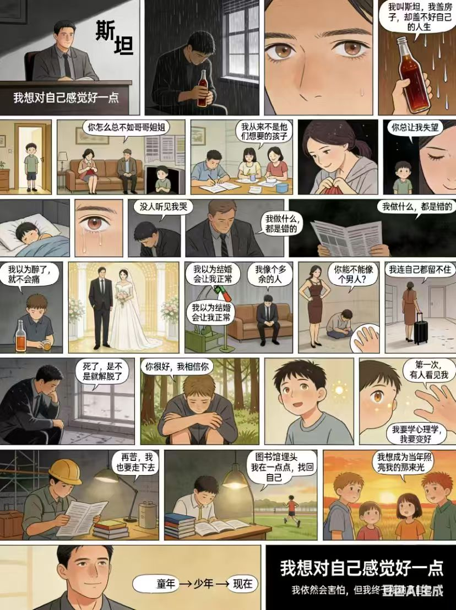

社会工作课程实践 · 心理咨询经典案例「斯坦」 · 豆包 AI 独立创作多格漫画
AIGC · 图像生成作品 豆包出图（Seedream） DeepSeek 协助脚本
「我想对自己感觉好一点」—— 一个关于被看见的故事

《斯坦的故事》成稿 · 豆包 AI 生成画面 · 创意方向与镜头语言由作者主导（DeepSeek 协助脚本草拟）
社会工作专业课程作业：斯坦案例看完后，选择一种方式进行分享和描述（可以做成画像或视频等）
斯坦，35 岁，大学新生，半工半读（建筑行业，辛苦但有成就感）。曾完成机械技师在职培训、参与夏令营管理并获得自信体验；同时有吸毒、偷窃、被开除、进少管所等行为问题史，目前受酗酒与药物滥用困扰。
成长于功能不良家庭：父母长期争吵，母亲强势、父亲软弱消极。家中有四个兄弟姐妹，斯坦常被与「完美的」兄姐比较，家庭中缺乏情感表达。
曾结婚又离婚，前妻性格强势、常指责其无能。婚姻关系反映了斯坦在亲密关系中的不安全感与自我否定倾向。
心理层面：自我否定、内疚、焦虑、社交恐惧、性别角色认同困惑、自杀倾向；行为层面：酗酒、回避人际交往；职业层面：有助人愿望，却因自我怀疑不敢走向治疗师之路。
强烈的改变动机与冒险精神；成功的工作经验与职业能力；对助人工作有明确兴趣，具备同理心、反思能力与自我觉察——心理成长的基础扎实。
改善情绪、戒除酗酒；克服对异性的恐惧、建立健康亲密关系；减少焦虑与内疚；成为儿童治疗师；建立对他人的信任，获得接纳与喜爱。
为什么是漫画 · 叙事线怎么设计 · AI 在其中的分工
文字报告容易变成评判，而多格漫画让观看者在低心理防御的状态下进入斯坦的内心世界——这恰好契合社会工作的视角：同理，而非评判。
叙事不停留在创伤展示。结尾落在斯坦自身的动机与资源上——「我想成为当年照亮我的那束光」——呼应社工干预中的优势视角：人不是问题本身，人身上有解决问题的能力。
创意方向、叙事结构与镜头级指导由人工主导（场景氛围、人物神态、对比画面逐镜指定）；DeepSeek 协助脚本草拟与迭代，豆包 AI 负责画面生成，经多轮 prompt 迭代统一人物形象与画风。
被拿来与兄姐比较、情感需求不被看见——灰暗低饱和的画面基调，人物常被置于画面边缘。
酗酒、婚姻失败、自我否定的循环——冷色调室内场景，封闭构图强化被困感。
图书馆埋头、一点点找回自己——画面转入暖色与开阔场景，结尾落在「我想对自己感觉好一点」。
与 AI 协作的真实过程：五次关键迭代，从视频脚本到漫画成稿
向 AI 下达结构化需求：斯坦第一视角、1 分钟时长、沉闷色调、案例中所有对斯坦产生影响的人物必须入镜——先定义「要什么」，再让 AI 起草。
逐镜补充导演级细节：父母对话时的眼神、神态与站位距离、家居环境氛围；兄姐「懂事」画面做对比；婚礼的热闹喜庆 vs 斯坦的自卑做重笔反差；婚后乔伊斯的能干成熟 vs 斯坦的幼稚；夏令营管理员肯定镜头的眼神、手势与语气设计；挑灯夜读蒙太奇的场景序列（图书馆、草坪、操场、教室）。
先产出分镜表（含配乐与拍摄建议），再改为 10 秒分段视频方案；评估免费视频生成工具的成本与可控性后，果断切换为漫画形式（20+ 页）——可制作性与质量优先于媒介执念。
向 AI 追问「斯坦的优秀品质通过什么方式在漫画中凸显」，引导叙事落点从创伤展示转向优势与资源——这一步决定了作品的社工专业底色。
整合为最终版本并生成漫画；导读《斯坦——从废墟中长出的光》由 AI 协助起草、人工选用定稿：
🌱 《斯坦——从废墟中长出的光》（节选）
「斯坦今年 35 岁，是一名建筑工人，也是一名刚入学不久的大学新生。他白天在工地上盖房子，晚上在宿舍里读心理学……但斯坦身上，有一种他自己都没察觉的光。他曾是一名优秀的机械技师；他在夏令营工作时，孩子们喜欢围着他；有一个管理员曾蹲下来看着他的眼睛说：『你很有潜力，你可以不一样。』那句话，像一颗种子，埋进了他心里……斯坦不是英雄，他只是个普通人。但正是因为他普通，他的挣扎、他的勇气、他的成长，才格外动人。」AI 工具能力 × 专业视角的结合
独立完成「需求拆解 → 脚本设计 → prompt 迭代 → 一致性控制 → 成稿交付」全流程。AI 不是一键出图，而是需要人来控制叙事质量与视觉一致性的生产工具。
决定作品质量的不是生成技术，而是对案例的专业理解：哪些情节必须呈现（功能不良家庭、自我否定循环）、落点放在哪里（优势与资源而非创伤）。AI 放大的是使用者的专业判断力。